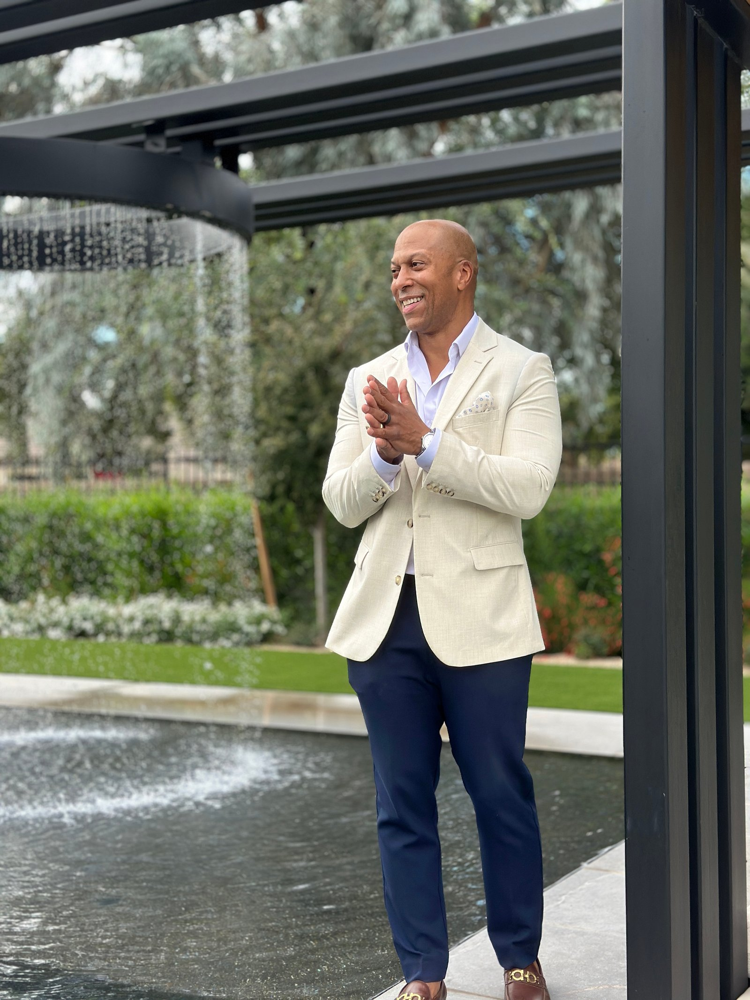
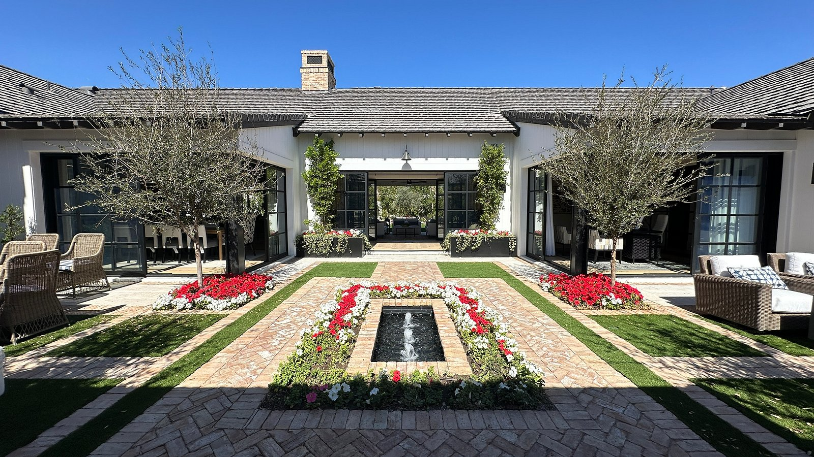
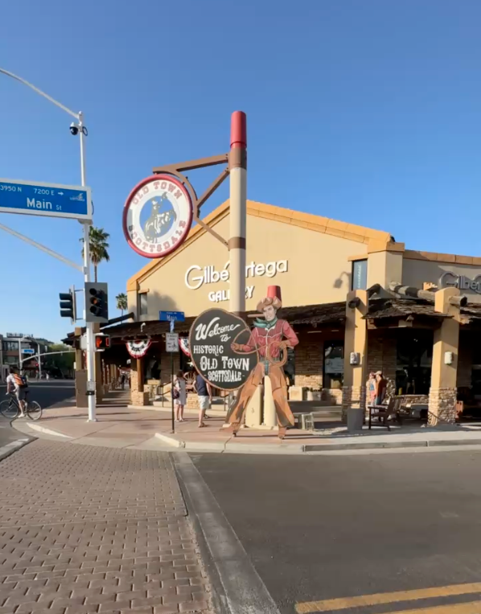

The Pace
Life here tends to move at a pace that surprises newcomers, not too rushed, not too slow. Vibrant.
A go-to resource for living, working and loving life in Scottsdale and the East Valley.
Hello there, I'm Romando Harrison, and I know firsthand that moving to a new state can feel like a huge step. Having relocated here myself, I've put together this guide as your personal companion to the East Valley: sun-drenched days, vibrant evenings, and a pace of life that surprises most newcomers. From the culinary scene to the desert landscape, consider me your local guide, here to help you navigate your move with confidence.
Welcome to Arizona.
Romando Harrison, REALTOR® | ProSmart Realty
202-412-4195 | rh@romandoharrison.com


If you're thinking about moving to Scottsdale, you've probably already Googled the basics. Average home prices. The "top" neighborhoods. The best restaurants according to a list written by someone who doesn't live here.
This guide is different.
This is the stuff locals actually tell their friends when they're thinking about moving here: the areas that feel different at different times of day, where people really go on a Tuesday night, which areas are worth the price and which ones aren't, and what daily life here truly looks like once the excitement of the move wears off.
You'll find local favorites, practical details, and honest insight that help you picture your real, everyday life here, not just where you'll live, but how you'll live. From where to grab coffee in the morning, to what people mean when they say "that side of town," to the little things that make a big difference once you're settled.
Think of this as the advice you'd get from a local friend who knows the area well and wants you to love living here as much as they do.
Romando Harrison, REALTOR® | ProSmart Realty
202-412-4195 | rh@romandoharrison.com
Every city has stats. What matters more is the feel.
Life here tends to move at a pace that surprises newcomers, not too rushed, not too slow. Vibrant.
Days are shaped by routines, convenience and proximity. Where you live often determines how much time you spend in the car, how spontaneous your evenings feel, and how connected you are to what's around you.
Some areas feel social and active. Others are quieter and more tucked away. Knowing the difference early helps you land somewhere that fits how you actually live, not just what looks good online.
Romando Harrison, REALTOR® | ProSmart Realty
202-412-4195 | rh@romandoharrison.com
This is the kind of insight you don't find on Google, the little things locals learn with time.
Weekday traffic is typically busiest from 7 to 9 AM and 4 to 6 PM. The 101 and 202 Loops are the primary areas of congestion. Weekends can feel busier around mid-morning.
Areas near Old Town Scottsdale and the Entertainment District feel more active, with dining, nightlife and events. Areas further north, including gated communities like Sereno Canyon and DC Ranch, tend to be quieter and more residential. Some areas feel very different on a weekday than they do on a weekend during peak season.
Late January through March is usually the busiest stretch of the year, driven by MLB Spring Training and the Phoenix Open.
The best stretch of weather runs October through April. November is a sweet spot for fewer crowds and ideal temperatures. Locals tend to avoid Old Town and the Camelback Mountain trailheads during peak times.
Romando Harrison, REALTOR® | ProSmart Realty
202-412-4195 | rh@romandoharrison.com

Beyond the purchase price.
When you're comparing Arizona to where you're coming from, the sticker price on a home is only part of the picture. Things worth budgeting for:
I'm happy to walk through real numbers for any specific property you're considering.
Romando Harrison, REALTOR® | ProSmart Realty
202-412-4195 | rh@romandoharrison.com
Scottsdale offers a blend of upscale living, outdoor recreation and cultural attractions. With over 300 days of sunshine a year, residents enjoy a resort-style atmosphere with world-class golf, spas and access to the McDowell Sonoran Preserve.
Located at the base of the McDowell Mountains in North Scottsdale, DC Ranch feels like a private village. It has its own walkable center at Market Street with shops and dining, and a strong architectural consistency throughout.
Guard-gated and centered around golf and the Hyatt Regency. Manicured, resort-style, and popular with lock-and-leave owners who want amenities and low maintenance in a central location.
Quiet, rugged high desert. Giant saguaros and massive boulder outcroppings right outside the window. Known for its golf course and temperatures that typically run five to ten degrees cooler than the valley floor. Further from the airport, but the views are unmatched.
One of the first master-planned communities in the country. Lush greenery and man-made lakes, which is a rare sight in the desert, plus more than 25 miles of public trails and a very central location.
High-energy, walkable and urban. Within walking distance of dining, art galleries and the Entertainment District. Strong market for luxury condos and mid-century modern remodels.
Balanced and accessible. Pocket parks, two golf courses, and a cohesive feel without the formality of the private clubs.
Romando Harrison, REALTOR® | ProSmart Realty
202-412-4195 | rh@romandoharrison.com
Romando Harrison, REALTOR® | ProSmart Realty
202-412-4195 | rh@romandoharrison.com
If you want a new home rather than someone else's, this is usually where you end up. The 85255, 85262 and 85266 corridors hold most of the active new-build inventory in the region.
Most of the product sits in phased, master-planned communities, which changes the process completely from a resale purchase. Builders release lots in groups, on their own schedule. A phase might open with fifteen lots, and the premium parcels — the ones backing preserve land or holding a McDowell view corridor — are frequently spoken for before the release goes public.
Romando Harrison, REALTOR® | ProSmart Realty
202-412-4195 | rh@romandoharrison.com
Gilbert blends suburban planning with a genuinely walkable downtown Heritage District. It has grown quickly while keeping a distinct town center, which is unusual in the Valley.
Tree-lined streets, white picket fences and lush green space. An East-Coast-meets-Arizona aesthetic, with traditional and craftsman homes, front porches and mature landscaping. Parks, lakes and walking trails throughout.
Semi-custom and custom homes on expansive lots, often an acre or more, with mature landscaping and equestrian-friendly properties. Ranch homes through Mediterranean estates, many with private stables.
A gated community of custom and semi-custom homes on generous lots, with maintained common areas, private parks and walking paths. Architecture ranges from Santa Barbara to modern desert.
Built around an 18-hole championship course designed by Gary Panks, with a private club, multiple pools, tennis, fitness and dining.
A 10-acre park, a community lake and an extensive trail system, plus a club with fitness center, heated pool and splash pad. Newer construction with an efficiency focus.
North Italia, Culinary Dropout, Bourbon Steak, Buck & Rider and Joe's Farm Grill anchor the dining scene. The Downtown Gilbert Farmers Market runs year-round, and Gilbert Days in November is a long-standing local tradition.
Romando Harrison, REALTOR® | ProSmart Realty
202-412-4195 | rh@romandoharrison.com
Paradise Valley is its own municipality, not a Scottsdale neighborhood, and it operates on a different premise: low density, large parcels, and effectively no commercial development beyond the resorts.
Nestled between Phoenix and Scottsdale, it offers estate-sized lots, mountain views and a great deal of privacy. Median home prices run well above three million dollars.
World-class resorts including Sanctuary and Mountain Shadows. Camelback Golf Club. Quick access to Scottsdale Fashion Square and the dining along the Camelback corridor.
There is very little production new construction in Paradise Valley. What exists is largely teardown-and-rebuild — buyers acquire an older property for the land and the views, then build custom. A handful of boutique condominium projects are the exception.
That makes this a genuinely different transaction. You are evaluating a lot rather than a floor plan: view corridors, hillside ordinance constraints, setbacks, what can actually be permitted on the parcel, and how long the approval timeline will run. Those questions decide the deal, and they get answered before you make an offer, not after.
Romando Harrison, REALTOR® | ProSmart Realty
202-412-4195 | rh@romandoharrison.com
A curated look at the firms shaping the most prestigious estates in the Valley.
Romando Harrison, REALTOR® | ProSmart Realty
202-412-4195 | rh@romandoharrison.com
Downtown Phoenix offers urban living with the Roosevelt Row arts district, professional sports venues and a growing tech scene. Arcadia and Biltmore provide upscale options with historic character and proximity to hiking.
Areas worth knowing: Arcadia and East Phoenix for Camelback views and lush streets. Central Corridor and North Central for classic old-Phoenix character and the bridle path. Biltmore Highlands for Piestewa Peak access plus Biltmore dining and shopping. Alvarado Historic District for historic estates near the museum corridor.
Dining and culture: Pizzeria Bianco, Bacanora, Wren & Wolf, Christopher's at Wrigley Mansion, and Little Miss BBQ. The Musical Instrument Museum and the Desert Botanical Garden are both worth the trip. Camelback Mountain and South Mountain Park handle the hiking.
Home to Arizona State University, my daughter is currently in her third year there. Tempe blends college-town energy with established residential areas. Tempe Town Lake handles kayaking, paddleboarding and five miles of paved path. Mill Avenue covers dining and nightlife.
Areas worth knowing: Maple-Ash for historic, tree-lined streets near ASU. Downtown Tempe for walkability. North Tempe and Hayden Ferry Lakeside for modern condos with water views. South Tempe for more space and a quieter feel. Daley Park for established neighborhood character.
Dining: Four Peaks Brewing Company, Cocina Chiwas, Filthy Animal, Casey Moore's Oyster House and The Chuckbox.
Romando Harrison, REALTOR® | ProSmart Realty
202-412-4195 | rh@romandoharrison.com
Queen Creek has shed its small rural town label to become one of Arizona's fastest-growing communities. For 2025 and 2026 it was ranked the number one Best Place to Live in Arizona by U.S. News & World Report.
Living here offers a modern-agrarian lifestyle. Brand-new shopping centers like Queen Creek Crossing sit alongside working olive groves and peach farms. It draws buyers who want more square footage and larger lots than what's available in nearby Gilbert or Chandler.
A gated community of custom estates built within a mature pecan grove. Thousands of trees, oversized lots and a park-like setting that's genuinely unique in the desert.
A gated resort community with all-ages and 55-plus sections, built around a Tom Lehman golf course. La Casa Club includes multiple pools, a full-service spa and dining.
One of the newest gated developments, with luxury estates on large lots, modern architecture, a private community center and San Tan Mountain views.
A gated Toll Brothers community known for desert-modern architecture and spacious single-story homes on estate lots, often with RV garages.
Built around a 24-acre deep-water lake with kayaking and paddleboarding, plus an aquatic center and pickleball courts.
A gated community near the base of the San Tan Mountains, with manicured landscaping, a private clubhouse and larger floor plans.
Nearby San Tan Valley offers more affordable options, planned communities like Johnson Ranch and Encanterra, and San Tan Mountain Regional Park with over 10,000 acres of trails.
Local favorites: Schnepf Farms, the Queen Creek Olive Mill and Queen Creek Marketplace.
Romando Harrison, REALTOR® | ProSmart Realty
202-412-4195 | rh@romandoharrison.com
Chandler pairs a significant technology corridor with a walkable historic downtown.
The Price Corridor is a genuine tech hub, with major employers including Intel, Microchip and Northrop Grumman, which gives the local economy real stability.
Often called the Venice of Chandler, built around 165 acres of man-made lakes and a 27-hole golf course. A mix of gated enclaves and waterfront homes with unusually lush landscaping.
Newer gated community with custom homes and estates on The Island, interconnected lakes, stone-paved bridges and high-end retail nearby.
One of Chandler's most established custom-home communities, with one-acre lots and equestrian privileges. Mature landscaping and a legacy feel.
A gated community with Mediterranean-inspired architecture, manicured common areas and a quiet, boutique scale.
Established lakeside community, with many homes backing directly onto a private lake. Spacious floor plans, large lots, community docks and walking paths.
Gated, with large custom estates on estate-sized lots and a heavy focus on architectural detail and privacy.
Local culture: The Chandler Center for the Arts runs year-round programming, alongside annual traditions like the Ostrich Festival and the Tumbleweed Tree Lighting.
Romando Harrison, REALTOR® | ProSmart Realty
202-412-4195 | rh@romandoharrison.com
Arizona is an open-enrollment state. That means you can apply to any public school regardless of which boundary you live in, space permitting — so your address does not lock you into a single option the way it might where you're coming from.
Some homes with a Scottsdale address are served by Phoenix schools, and vice versa. Never assume based on the mailing address.
If a charter is part of your plan, applications typically open in January for the following fall. Apply early.
I don't rate or rank schools — that's a decision that belongs to you, based on what matters for your household. For current boundaries, ratings, programs and enrollment details, go directly to the source: the Arizona Department of Education, GreatSchools.org, or the individual district's website.
Romando Harrison, REALTOR® | ProSmart Realty
202-412-4195 | rh@romandoharrison.com
I specialize in helping out-of-state buyers find the right home in the Phoenix Valley, with a particular focus on new construction, where my background actually matters.
Before real estate, I spent two decades managing construction projects. I hold a civil engineering degree from the Virginia Military Institute and worked in construction management with NAVFAC, the USPS Office of Inspector General, and Intel. I read plans, specifications and contracts for a living long before I sold a house.
If you can't fly out for a walkthrough, I'll shoot video of the lot, the inventory, or the construction milestone and send it to you the same day.
Virginia Military Institute degree, I read plans, specs and contracts for a living long before I sold a house.
Two decades managing projects with Naval Facilities Engineering Command and Intel.
Can't fly out? I'll shoot video of the lot, inventory, or construction milestone and send it to you the same day.
Romando Harrison, REALTOR® | ProSmart Realty